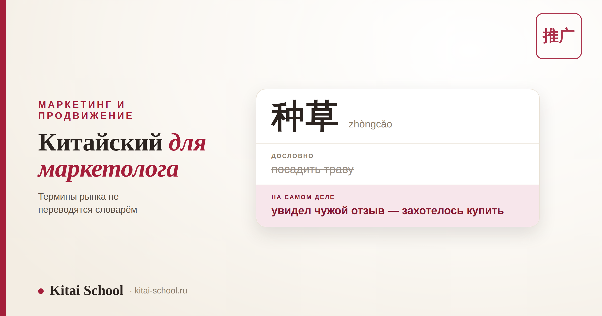
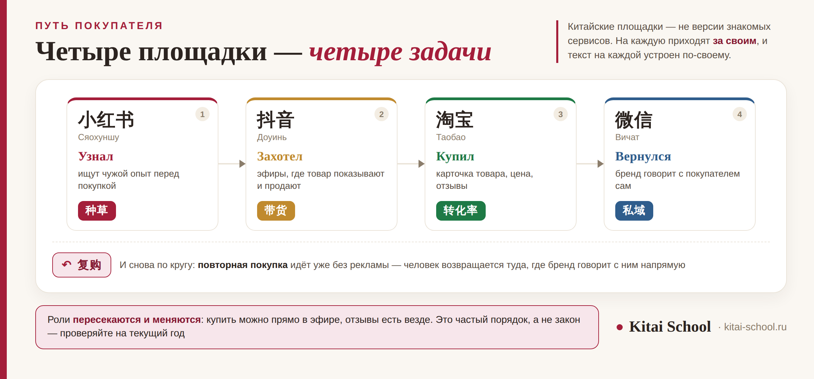

Китайский для работы и бизнеса
Курс по маркетингу на китайском языке: площадки, термины и что должно быть в программе


Курсы делового китайского готовят к переговорам. Маркетологу переговоры нужны реже, чем другое — читать рынок самому: посты на площадке, карточку товара, отчёт подрядчика и комментарии под публикацией. И здесь выясняется неприятное: заметная часть смысла держится на словах, у которых нет русского перевода, а машинный перевод передаёт их буквально, и получается другой смысл.
Маркетологу китайский нужен, чтобы читать рынок, а не только говорить с подрядчиком. Роли между площадками распределены не так, как привычно: на одной ищут чужой опыт перед покупкой, на другой смотрят эфиры, третья нужна для прямого общения с покупателем. Часть терминов не переводится вообще: это названия явлений, и учить их надо через явление. А про сам курс честно: он даёт язык рынка, а не стратегию продвижения — это разные предметы, и обещать оба сразу нечестно.
Чем язык маркетолога отличается от делового китайского
Разница не в словах, а в том, что вы с языком делаете. Отсюда и разные программы.
| Деловой курс | Курс для маркетолога |
|---|---|
| вести переговоры, знакомиться, договариваться | читать площадки: посты, карточки товара, комментарии |
| ключевой навык — устная речь | ключевой навык — быстрое чтение и понимание сокращений |
| лексика широкая | лексика узкая, но своя: у площадок и у рекламы отдельный словарь |
| ошибка стоит неловкости | ошибка стоит неверного вывода о рынке |
Это не значит, что говорить не придётся: встречи с подрядчиком и блогерами никуда не деваются. Но там вам поможет и переводчик, а вот прочитать за вас все комментарии под публикацией он не сможет. Общая картина делового китайского — какие блоки лексики и какого уровня хватает под разные задачи — разобрана в статье про китайский язык для бизнеса, готовые реплики для встреч собраны в разборе китайский для делового общения.
Слова, у которых нет русского перевода
Это главная особенность темы. В деловом китайском слова переводятся точно, а расходится смысл сказанного. Здесь иначе: переводить попросту нечего — перед вами названия явлений, которых в русском маркетинге не сложилось.
| Термин | Пиньинь | Дословно | Что это на рынке |
|---|---|---|---|
| 种草 | zhòngcǎo | посадить траву | вызвать желание купить через чужую рекомендацию |
| 拔草 | bácǎo | выполоть траву | закрыть это желание: либо купить, либо передумать |
| 私域 | sīyù | частная территория | аудитория, с которой бренд связывается напрямую, без площадки |
| 公域 | gōngyù | общая территория | аудитория самой площадки: доступ к ней покупают |
| 爆款 | bàokuǎn | взрывной товар | товар, который вдруг стал массово популярным |
| 带货 | dàihuò | нести товар | продажа через блогера, чаще всего в прямом эфире |
| 达人 | dárén | мастер | блогер, которого слушают как знатока своей темы |
| 口碑 | kǒubēi | молва | что о товаре говорят сами покупатели |
Посмотрите на первую строку. 种草 дословно — «посадить траву», и машинный перевод именно так и напишет. А обозначает это ситуацию, знакомую каждому: вы увидели чужой отзыв, и вам захотелось это купить. Пока термин переводят словарём, читать рынок невозможно — поэтому такие слова разбирают через явление, а не через перевод: сначала что происходит, потом как это называется.
Площадки: у каждой своя роль
Вторая вещь, которая расходится с привычными ожиданиями. Китайские площадки — не «их версии» знакомых сервисов: люди приходят на них с разными задачами, и текст на каждой устроен по-своему.
| Площадка | Пиньинь | Как называют | Зачем туда идут |
|---|---|---|---|
| 小红书 | xiǎohóngshū | Сяохуншу | идут за чужим опытом перед покупкой: отзывы, разборы, находки |
| 抖音 | dǒuyīn | Доуинь | короткие видео и прямые эфиры, где товар показывают и тут же продают |
| 淘宝 / 天猫 | táobǎo / tiānmāo | Таобао и Тмолл | торговые площадки: карточка товара, цена, отзывы, сама покупка |
| 微信 | wēixìn | Вичат | мессенджер и целая среда вокруг него: аккаунт бренда, мини-приложение, рассылка |
| 微博 | wēibó | Вэйбо | открытая лента: новости, инфоповоды, публичное обсуждение брендов |
| 哔哩哔哩 | bìlībìlī | Бильбили | длинные видео и подробные обзоры, аудитория заметно моложе |

Оговорка, без которой схема выше будет неточной: роли пересекаются и меняются. Купить можно прямо в эфире, отзывы есть везде, а площадки регулярно добавляют себе чужие функции. Схема показывает не закон, а частый порядок — и именно поэтому названия и роли стоит перепроверять на текущий год, а не заучивать однажды.
К нам пришла команда бренда, который уже год работал с китайским подрядчиком по продвижению. Отчёты приходили на английском, встречи шли через переводчика, всё выглядело понятно. Учить язык они собирались «когда-нибудь потом».
Разбирать начали с простого: открыли комментарии под их собственными публикациями. Там обсуждали не то, что было в отчёте. Людей волновал один повторяющийся вопрос о товаре — и в отчёт он не попадал, потому что в отчёте были другие строки.
Программу мы им собрали узкую: словарь площадок, строки отчёта и чтение комментариев. Через несколько месяцев маркетолог читал обсуждение сам и приходил к подрядчику с конкретными вопросами. Работу подрядчика это не заменило — но разговор с ним стал предметным.
Что смотрят в отчёте: язык рекламного кабинета
Второй рабочий словарь — тот, на котором написан отчёт. Слов немного, и они повторяются от площадки к площадке.
| Слово | Пиньинь | Перевод | Что за ним стоит |
|---|---|---|---|
| 曝光 | pùguāng | Показы | сколько раз объявление или пост показали |
| 点击率 | diǎnjīlǜ | Доля кликов | сколько человек из увидевших нажали |
| 转化率 | zhuǎnhuàlǜ | Конверсия | сколько из пришедших сделали то, ради чего всё затевалось |
| 客单价 | kèdānjià | Средний чек | сколько в среднем оставляет один покупатель |
| 复购 | fùgòu | Повторная покупка | вернулся ли покупатель за вторым заказом |
| 粉丝 | fěnsī | Подписчики | те, кто подписан на аккаунт бренда или блогера |
| 投放 | tóufàng | Размещение | запуск рекламы на площадке за деньги |
| 引流 | yǐnliú | Перевод аудитории | увести людей с площадки туда, где бренд общается с ними сам |
Отдельно стоит пара 公域 и 私域 из таблицы выше: за доступ к аудитории площадки платят каждый раз, а с собственной аудиторией бренд связывается сам. Термин 引流 как раз про переход между ними — увести человека из общей ленты туда, где с ним можно говорить напрямую. Разобравшись в этих трёх словах, вы понимаете, как устроена логика китайского отчёта.
Где чаще всего ошибаются
Три места, и ни одно из них не про плохое знание грамматики.
| Где | Что происходит | Что делать |
|---|---|---|
| Машинный перевод терминов | слово переводится буквально, и получается другой смысл | разбирать термин как явление рынка, а не искать русское соответствие |
| Перенос привычек | китайскую площадку считают аналогом знакомой и ждут того же поведения | смотреть, зачем на неё приходят люди, а не на что она похожа |
| Чтение только своих текстов | официальные посты бренда читают, обсуждение под ними — нет | включить комментарии в работу: там прямая реакция, сленг и сокращения |
Общее у всех трёх одно: рынок читают через посредника и получают его картину, а не свою. Посредник при этом может быть отличным — но он отвечает на те вопросы, которые ему задали. Вопросы задаёте вы, и для этого нужно видеть исходный текст.
Произношение и иероглифика: сколько их нужно маркетологу
Обещание «поставим произношение и иероглифику» звучит в описании почти любого курса, поэтому стоит сказать, что из этого действительно нужно в работе.
| Навык | Зачем он маркетологу |
|---|---|
| Узнавать знаки в интерфейсе | названия разделов, подписи кнопок, строки отчёта — их автоперевод искажает чаще всего |
| Читать быстро | комментарии и посты читают десятками, здесь важнее скорость, а не глубина разбора |
| Произносить названия верно | площадки и бренды приходится называть вслух на встречах, а тон меняет слово |
| Писать знаки от руки | в этой работе почти не встречается: набирают с клавиатуры по звучанию |
Если нужен именно этот навык отдельно, у нас есть два подробных разбора: как устроен знак и на что смотреть в программе — курсы по иероглифике; как ставят тоны и звуки — корректировка произношения. Здесь повторять их не будем.
Что должно быть в программе: пять пунктов
Всё это спрашивается до оплаты и проверяется на первом занятии.
| Пункт | Как проверить |
|---|---|
| Занимаются на живых материалах | посты, карточки товара, комментарии — а не учебные тексты про абстрактную фирму |
| Термины дают через явление | сначала разбирают, что происходит на рынке, потом называют слово |
| Учат читать интерфейс и отчёт | разделы кабинета, подписи кнопок, строки отчёта — то, что машинный перевод передаёт хуже всего |
| Отдельно берут комментарии | там сокращения и сленг, которых нет ни в одном учебнике |
| Дают шаблоны переписки под задачи | бриф блогеру, правки, сроки, согласование материала |
И признак, по которому программа отсеивается сразу: если курс языка обещает научить продвижению — в китайских соцсетях, у блогеров, где угодно. Это разные предметы. Честная формулировка звучит скучнее: даём язык рынка, а стратегию берите у маркетологов. Про уровни: чтение площадок и отчётов тянут примерно с HSK 4, а на встречи нужна отдельно поставленная речь и HSKK. Если учится команда, форматы разобраны в статье про корпоративный китайский.
Частые вопросы (FAQ)
Чем курс по маркетингу на китайском отличается от делового китайского?
Задачей. Деловой курс готовит к разговору: познакомиться, обсудить условия, договориться. Маркетологу разговор нужен реже, чем чтение: посты на площадке, карточка товара, отчёт подрядчика, комментарии под публикацией. Поэтому программа строится вокруг чтения живых материалов и вокруг словаря площадок, а не вокруг диалогов. Устная часть при этом остаётся, но обслуживает работу с текстами, а не наоборот.
Научит ли такой курс продвижению в китайских соцсетях?
Нет, и это стоит сказать прямо. Курс языка даёт словарь рынка и умение читать площадку: что написано в посте, что спрашивают в комментариях, что стоит в строке отчёта. Стратегия продвижения — отдельная профессия, и учат ей не на языковых курсах. Если курс китайского обещает научить маркетингу, это повод задать уточняющие вопросы: скорее всего, ни того ни другого там не будет в нужном объёме.
Почему нельзя просто перевести китайские маркетинговые термины?
Потому что переводить в них нечего: это названия явлений, а не слова с русским соответствием. 种草 дословно значит «посадить траву», но обозначает ситуацию, когда чужая рекомендация вызвала желание купить. 私域 — «частная территория», а на деле это аудитория, с которой бренд связывается сам, без посредника. Машинный перевод даёт буквальный смысл, и получается совсем другое. Такие слова учат через явление: сначала разбирают, что происходит на рынке, потом дают термин.
Какой уровень китайского нужен маркетологу?
Для чтения площадок и отчётов хватает уверенного среднего уровня плюс отраслевого словаря: тексты повторяются, и словарь у них узкий. Сложность не в грамматике, а в сленге и сокращениях, которых нет в учебниках. Чтобы вести встречи и обсуждать работу голосом, нужен уровень выше и отдельно поставленная речь. Разумный порядок такой: сначала чтение и словарь, потом устная часть.
Нужно ли учить иероглифы, если браузер переводит страницу?
Нужно, но не в том объёме, о котором обычно думают. Писать от руки маркетологу не приходится, а вот узнавать знаки в интерфейсе, в названии раздела и в строке отчёта — приходится постоянно. Автоперевод при этом искажает как раз то, что важнее всего: подписи кнопок, сокращения и термины площадок. Так что задача не «выучить тысячи знаков», а уверенно узнавать рабочий набор.
Сколько терминов нужно, чтобы начать читать площадки?
Меньше, чем кажется. Основа держится на нескольких десятках слов: названия площадок, словарь рекламного кабинета и десяток понятий вроде тех, что разобраны выше. Их проходят за несколько занятий. Дольше нарабатывается не словарь, а скорость чтения и привычка смотреть в комментарии, а не только в официальный текст бренда.
Мы собираем такие программы под конкретную задачу: берём ваши площадки, ваши посты и ваши отчёты и разбираем словарь на них. Приходите на бесплатное пробное занятие — посмотрим, с какими материалами вы работаете, и покажем, с чего начать.
Или напишите слово МАРКЕТИНГ нашему менеджеру в Telegram — рассчитаем формат под вашу команду.
Дальше по теме: что учить и какого уровня хватит — китайский язык для бизнеса; готовые реплики для встреч и переписки — китайский для делового общения; обращение в письме — деловое письмо китайскому партнёру; поведение на переговорах — бизнес-этикет в Китае; обучение команды — корпоративный китайский; язык поставки и документов — курс по логистике; работа с китайскими компаниями — работа в Китае для иностранца; знаки — курсы по иероглифике; тоны и звуки — корректировка произношения; занятия — индивидуальные уроки.
Источники
- Практика Kitai School — обучение маркетологов и отделов продвижения, разбор материалов китайских площадок.
- Официальные справочные разделы самих площадок — названия разделов и показателей рекламного кабинета; проверяются по действующей версии интерфейса.
- Официальный сайт экзамена chinesetest.cn — требования уровней HSK и устного экзамена HSKK.
Пусть рынок читается без переводчика! 祝推广顺利！